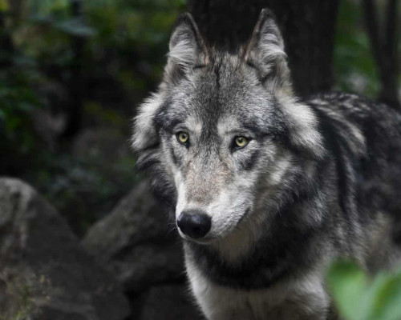

Lobo
O lobo é um mamífero carnívoro que faz parte da mesma família do cão doméstico. Geralmente, o termo lobo é utilizado para fazer referência ao lobo-cinzento.

O lobo-cinzento é uma espécie de mamífero carnívoro encontrada em algumas regiões do hemisfério norte.
O lobo é um animal carnívoro pertencente à mesma família dos cães domésticos. O termo lobo geralmente é utilizado para fazer referência ao lobo-cinzento, que apresenta nome científico Canis lupus. Essa espécie de lobo destaca-se por ser uma espécie carnívora e que vive em grupos denominados alcateias. Nas alcateias, de forma geral, apenas um casal é responsável pela reprodução.
Apesar da denominação de lobo-cinzento, a coloração do pelo pode variar, sendo alguns indivíduos, por exemplo, completamente brancos. Os lobos são animais relativamente grandes, podendo atingir mais de 1 metro no comprimento total do corpo. Vale destacar que outras espécies também são chamadas de lobo, como é o caso do lobo-guará, uma espécie que pode ser encontrada no Brasil.
- Resumo sobre o lobo
- Características do lobo
- Habitat do lobo
- Alimentação do lobo
- Comportamento e reprodução do lobo
- Outras espécies de lobo
Tópicos deste artigo
Resumo sobre o lobo
Características do lobo
Geralmente, o termo lobo é utilizado para se referir à espécie Canis lupus. Esses animais, também conhecidos popularmente como lobos-cinzentos, são mamíferos e estão incluídos na ordem Carnivora, família Canidae, mesma família dos cães domésticos, coiotes e raposas.
Apesar de serem chamados de lobos-cinzentos, há uma grande variação na cor do pelo do animal. No Ártico, por exemplo, pode-se encontrar indivíduos completamente brancos. Os lobos-cinzentos podem ainda apresentar pelagem com misturas variáveis de branco com tons de cinza, canela, marrom e preto e até preto quase uniforme.
Os lobos-cinzentos são animais relativamente grandes, possuindo o comprimento total do corpo, isto é, da ponta do nariz à ponta da cauda, entre 1 e 1,3 m em machos e entre 0,87 m e 1,17 m em fêmeas. A cauda desses animais varia entre 35 e 52 cm. Geralmente, possuem altura da base das patas ao ombro variando entre 60 e 90 cm.
Os machos dessa espécie pesam cerca de 55 kg, enquanto as fêmeas pesam, em média, 45 kg. Ao nascer, os filhotes de lobo-cinzento pesam cerca de 0,5 kg. Outra característica interessante sobre os filhotes de lobo é que eles são surdos e cegos ao nascer, abrindo seus olhos apenas dentro de dez a quinze dias após o nascimento.
Habitat do lobo
Anteriormente, era possível encontrar lobos-cinzentos vivendo em todo o hemisfério norte do planeta. Hoje, no entanto, sua área de distribuição reduziu consideravelmente devido a fatores como a caça e a destruição de seu habitat.
Populações de lobo podem ser observadas atualmente ocorrendo no Canadá, norte dos Estados Unidos e Alasca, Europa e Ásia. Nessas regiões, são encontrados em diferentes habitats, como a tundra, pradaria e paisagens áridas.
Alimentação do lobo
Os lobos-cinzentos são animais carnívoros, alimentando-se, portanto, de outros animais. Sua dieta geralmente inclui alces, veados, caribus e javalis. Em áreas mais urbanizadas, onde há maior escassez de presas naturais, é comum vê-los alimentando-se de animais domésticos e até mesmo de restos de alimentos do lixo.
Comportamento e reprodução do lobo
Lobos-cinzentos são animais que vivem em grupos chamados de alcateias.
Os lobos-cinzentos são encontrados em grupos estruturados que recebem o nome de alcateia. Uma alcateia é, geralmente, composta pelos progenitores e pelos seus filhotes daquele ano e/ou de anos anteriores.Eventualmente, uma alcateia pode apresentar indivíduos não aparentados ou aparentados de um dos adultos reprodutores. Algumas alcateias podem ser muito numerosas, com mais de 40 indivíduos, entretanto, em média, uma alcateia é formada por 3 a 11 lobos.
Em uma alcateia, de forma geral, apenas um casal é responsável pela reprodução. As fêmeas formam um vínculo com seu parceiro que permanece por toda a vida. A cada gestação, que dura entre 61 e 64 dias, nascem, em média, cinco filhotes. Após o nascimento, as fêmeas colocam seus filhotes em tocas, as quais eles utilizam até completarem 8 a 10 semanas de idade.
No que diz respeito à alimentação dos filhotes, inicialmente, eles recebem comida regurgitada. Após 45 dias, são alimentados com carne, fornecida pelos membros da alcateia. Eles começam a caçar em grupo com aproximadamente dez meses de idade.
Os lobos são animais que apresentam grande capacidade de comunicação. Além dos famosos uivos, a comunicação pode ocorrer por meio da linguagem corporal, que inclui agachamento e rolar pelo chão. Eles também se comunicam por meio da demarcação via odor.
Outras espécies de lobo
Até aqui, falamos a respeito do lobo-cinzento, uma espécie frequentemente chamada apenas de lobo. Entretanto, outras espécies são também denominadas popularmente dessa forma. A seguir, conheceremos outras duas espécies, o lobo-vermelho e o lobo-guará.
O lobo-vermelho havia sido declarado extinto da natureza em 1980.
O lobo-vermelho é um animal pertencente à espécie Canis rufus, encontrada apenas nos Estados Unidos. Essa espécie ocorre em áreas de pântano e terreno montanhoso.
O lobo-vermelho é menor que o lobo-cinzento, suas pernas e orelhas são mais longas e eles possuem pelo mais curto. Sua pelagem apresenta uma mistura de canela, laranja, cinza e preto. No inverno, a pelagem avermelhada predomina.
O Canis rufus
alimenta-se de roedores, pequenos mamíferos e também de ungulados
(animais com casco). Como exemplo de suas presas podemos citar coelhos, ratos almiscarados e veados.Atualmente, essa espécie é considerada pela IUCN (União Internacional para a Conservação da Natureza) como criticamente ameaçada, e sua tendência populacional é de decréscimo. O lobo-vermelho havia sido declarado extinto da natureza em 1980, mas graças a programas de reintrodução, foi possível levar a espécie de volta ao ambiente natural.
O lobo-guará é o maior canídeo da América do Sul.
O lobo-guará (Chrysocyon brachyurus) é uma espécie típica do Cerrado e é considerado o maior canídeo da América do Sul. O lobo-guará ocorre no Brasil, Bolívia, Argentina, Paraguai e Peru. De acordo com a IUCN, a espécie provavelmente está extinta no Uruguai.
Esse lobo destaca-se por sua pelagem laranja-avermelhada e por sua crina com pelagem negra, que ocorre também no focinho e nos membros. Na ponta da cauda, na parte interna do pescoço e no interior das orelhas, a coloração do pelo é branca.
O Chrysocyon brachyurus apresenta comportamento solitário e é considerado um animal inofensivo, evitando contato com os seres humanos. Diferentemente do que muitos pensam, não se trata de um animal carnívoro, sendo classificado como onívoro. O lobo-guará se alimenta de animais como tatus e roedores, bem como de frutos do Cerrado, como a lobeira.
Atualmente, a espécie é classificada, na Lista Vermelha de Espécies Ameaçadas da IUCN, como quase ameaçada.